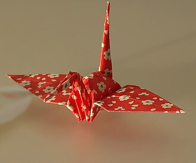
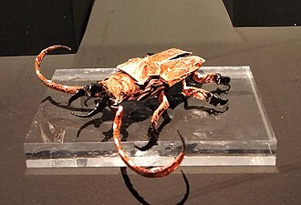
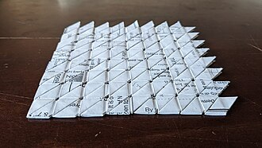
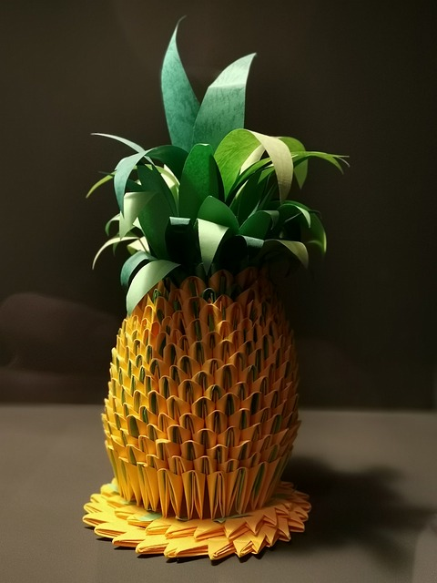

Paperi tuli Japaniin Kiinasta Korean niemimaan kautta noin
600–700-luvuilla. Japanissa paperin valmistustekniikka
kehittyi, ja paperin käyttö yleistyi. Paperia käytettiin
aluksi muun muassa uskonnollisissa seremonioissa, lahjojen
koristelemisessa ja erilaisissa etikettikäytännöissä.
Myöhemmin paperin taittelusta tuli myös viihdettä.
Edo-kaudella origamista tuli vähitellen tavallisen kansan
harrastus. Vuonna 1797 julkaistu
Hiden Senbazuru Orikata
on yksi tärkeimmistä varhaisista origamikirjoista ja sitä
pidetään maailman vanhimpana tunnettuna vapaa-ajan origamiin
keskittyvänä kirjana.
1900-luvulla origamin kehitykseen vaikutti erityisesti
japanilainen taittelija
Akira Yoshizawa
. Hänen työnsä auttoivat muuttamaan origamia perinteisestä
paperin taittelusta moderniksi taidemuodoksi. Yoshizawa
kehitti myös uusia taittelutekniikoita ja tapoja esittää
origamiohjeita.
600–700-luvut
– paperin valmistus ja käyttö leviävät Japanissa
1600–1700-luvut
– origami yleistyy harrastuksena
–
Hiden Senbazuru Orikata
julkaistaan
1900-luku
– moderni luova origami kehittyy
1950-luku
– Akira Yoshizawan työ saa kansainvälistä huomiota
Origamin tyylejä
Perinteinen origami

Perinteinen origami perustuu tunnettuihin ja pitkään
käytettyihin malleihin. Tunnettuja esimerkkejä ovat
paperikurki, sammakko, vene ja erilaiset kukat.
Luova origami

Luovassa origamissa taittelija suunnittelee uusia
malleja tai muokkaa olemassa olevia malleja. Modernissa
origamissa voidaan tehdä erittäin realistisia eläimiä,
ihmisiä ja kasveja.
Modulaarinen origami

Modulaarisessa origamissa lopullinen työ koostuu useista
erikseen taitelluista paperiyksiköistä eli moduuleista.
Moduulit yhdistetään toisiinsa yleensä ilman liimaa
esimerkiksi pujottamalla niiden läppiä ja taskuja
toistensa sisään.
3D-modulaarinen origami

3D-modulaarinen origami on erityisen kiinnostava muoto,
koska sen avulla voidaan rakentaa kolmiulotteisia
kappaleita, kuten palloja, tähtiä, kuutioita, pyramideja
ja monimutkaisia monikulmioita.
Yksi tunnettu modulaarisen origamin yksikkö on
Sonobe-yksikkö
. Useista samanlaisista yksiköistä voidaan rakentaa
erilaisia geometrisia kappaleita. Modulaarisen origamin
lopputulos voi näyttää hyvin erilaiselta kuin
yksittäinen moduuli.
Origamin eri tyylit ja niiden keskeiset ominaisuudet
Taulukko: Origamin eri tyylien keskeiset
ominaisuudet.